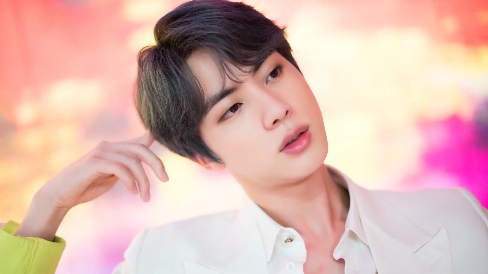

Nome verdadeiro: Kim Seok-jin (김석진).
Cidade natal: Gwacheon, Coreia do Sul.
Data de nascimento: 4 de dezembro de 1992.
No BTS: vocalista, produtor e compositor.
Jin, por sua vez, escolheu uma alpaca para representá-lo no projeto. Assim como ele, o personagem adora cozinhar e comer. O casaco de pele macio e a alma sensível, fazem com que todos se sintam em casa. Enquanto criava o personagem ao lado dos outros membros, Jin disse que estava apenas rabiscando desenhos de alpacas por anos, antes dessa colaboração, então ele estava animado para finalmente dar vida a uma. Além disso, o cantor contou que outros membros também dizem que ele parece uma alpaca, principalmente quando come.
As oportunidades de estrelato praticamente buscaram Jin. Enquanto ainda estava na escola secundária, ele foi abordado na rua pela agência SM Entertainment, mas recusou a oferta na época. Alguns anos depois, novamente na rua, foi a Big Hit Entertainment que abordou o jovem, que dessa vez aceitou o convite para uma audição como modelo. Sua trajetória na agência, contudo, o levaria a se tornar um dos integrantes do BTS.
Quando o assunto é filantropia, Jin é tão ativo quanto seus colegas de banda. Em 2018, o artista fez uma grande doação de recursos para a Associação Coreana de Bem-Estar Animal, e doou mais de 300kg de alimentos para os defensores dos direitos dos animais da Coreia (KARA).
Como membro mais velho do BTS, Kim Seokjin foi o primeiro a se alistar em 13 de dezembro de 2022, aos 30 anos. Antes de servir no exército, o cantor lançou o single The Astronaut (2022) com o Coldplay, em uma apresentação conjunta na Argentina. De acordo com o Yahoo, é provável que Jin retorne em junho de 2024.